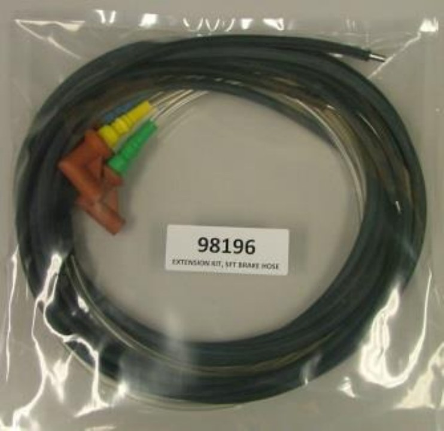

Doc no. MOC-TSB-13-24 // Vol. 13 No. 24 // Aug 27, 2013 // Brake
Service Hose Extension Kit for Pure Brake Fluid Exchanger Machines
New98196
MOC has developed a new service hose extension kit for the Pure Brake Fluid Exchanger Machines. This kit is intended to increase the length of the existing service hoses on the brake machine by 5ft. Extended hoses are needed for vehicles with longer chassis, as well as for shops that do not have lifts for servicing a vehicle.
What's new
In addition to creating a new hose extension kit, the Machine and Equipment Department has also increased the length of all 4 service hoses on the Pure Brake Machines by 2ft.
Contact
For more information, contact the Machine & Equipment Department at 866.244.6621.

Part numbers
| Part No. | Description | Notes |
|---|---|---|
| 98196 | Extension Kit, 5ft Brake Hose |